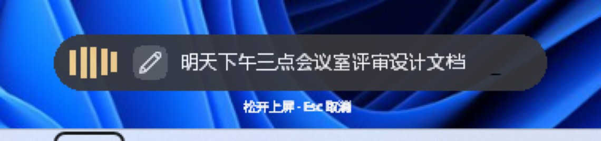

按住，说一句
默认右 Option（Windows 为右 Alt），也可以在设置里换成顺手的键。按下不足 400ms 会当作误触丢弃。
KEYDOWN0.4s
① 评审时间改到周三下午。
② 设计稿周五前发到群里。
③
没有账号，没有云端队列。按下、说话、松手，三个动作，一条本地流水线。
默认右 Option（Windows 为右 Alt），也可以在设置里换成顺手的键。按下不足 400ms 会当作误触丢弃。
降噪、VAD、语音识别都在本机跑。准流式预览每 900ms 刷新一次，你能看着字一个个出来。
文字进入当前输入框，粘贴或逐字上屏可选。Esc 随时取消，双击热键取回上一次听写。
听写只是入口。热词、改写、声纹、上屏方式，都是为「说完就能用」准备的。
音频进入麦克风后，只在本机内存里流转：降噪 → VAD → 识别 → 标点 → 上屏。产品里不存在「把录音发给服务器」的路径。
日常听写用 SenseVoice，够快；正式内容切到 Qwen3，短句更准，代价是慢一些。
长听写会话最长 120 秒，单段不超过 30 秒，自动接续，不会说到一半被切断。
热词自学习：只填你「想听到」的词，产品名、同事名、内部黑话，不必逐条纠错。
⌘E 唤起五种改写：润色、正式、精炼、英文、总结。原文留在原地，改完替换。
不写历史、不落盘、不在浮层显示正文。适合在会议、客服、医疗场景里使用。
声纹校验在本机完成，模型 39MB。旁边有人说话时，不会把别人的话打进你的文档。
粘贴快，逐字稳。终端、远程桌面、游戏输入框各有脾气，可以给单个 App 指定上屏策略。
实验功能：局域网听写接口默认关闭，开启后监听 127.0.0.1:8765，需要 token。改完配置需重启。
一个不抢焦点的浮层，出现在你正在写的地方。说完，浮层消失，文字留下。

浮层不抢焦点，按住热键就能说，松手文字直接进当前输入框。
准流式预览让确认和纠错发生在说完之前，而不是之后。
说错了按 Esc，文字不会上屏；双击热键还能取回上一次结果。
免费、无账号。首次启动会引导下载模型；也可以选完整离线包，把六个模型一次带走。
首次启动需下载约 235MB 模型（SenseVoice + 标点 + 降噪）。安装包未公证，首次打开需在「系统设置 → 隐私与安全性」里点「仍要打开」。
0e4bc9fd1ef8e2ae1fb3b4836c4acbc614cd8cdf505edd2fa8a1f20b942a1f43随包附带 SenseVoice 与运行库，装完即可离线使用。安装包未签名，SmartScreen 可能提示「更多信息 → 仍要运行」。
fed58b67908cc3a7b78be54dfb51cf244c3a278d0e2412c6a9e25819bcd21a44
解压后双击 install-models.command，脚本会把六个模型复制到 ~/.eryu/models 并打开应用；装好以后不再联网下载。
b05d8ce6a9c37e5c89a427397c76017e52268451b5c3e3f36bf034fb58a8d777
解压后双击 install-full.bat，安装应用、复制全部模型、创建开始菜单项，完成后自动启动。
1d23b3e74ef60e71658d154766adc43b62129d9285bc353abfd6318961a52c6c
校验方式：shasum -a 256 文件名（macOS）或 certutil -hashfile 文件名 SHA256（Windows）。
也可以从 GitHub Release 下载同样的安装包。
两个版本的应用完全相同，区别只是模型是否随包。也可以到下载页单独取某个模型。
识别是离线的。音频从麦克风进来后只在本机处理，产品里没有上传音频的通道。
但「离线」不等于「永不上网」：首次使用要下载模型；可选的 LLM 润色会把文字发到你配置的服务端（默认关闭）；可选的诊断上传会发脱敏日志（默认关闭，不含正文）。除此之外没有遥测。
暂不支持。当前 macOS 版只提供 Apple Silicon（arm64）构建，要求 macOS 13 及以上。Intel 机器可以关注后续版本或从源码自行构建。
安装包没有做 Apple 公证，这是预期行为。到「系统设置 → 隐私与安全性」，在页面下方点「仍要打开」，再确认一次即可。Windows 上对应的是 SmartScreen 的「更多信息 → 仍要运行」。
不会。音频只在本机内存中流转，不落盘、不上传。开启可选的 LLM 润色时，发送的是识别后的文字和你配置的服务端地址，音频仍然不出本机。诊断包默认不含正文。
单个听写会话最长 120 秒，内部按 ≤30 秒切段自动接续。Qwen3 精度档只适合短句，超过 30 秒请用 SenseVoice。
完全免费，源码开源。模型来自 sherpa-onnx 上游发布，不需要额外授权费用；体积从 0.5MB 到 879MB 不等，按需下载。
系统听写更通用；字在把几件具体的事做深：长听写 120 秒、热词自学习、选区改写、按 App 选择上屏方式、声纹只收自己的声音，以及可自行核对的本地识别链路。它不替代系统听写，适合每天要写很多字的人。